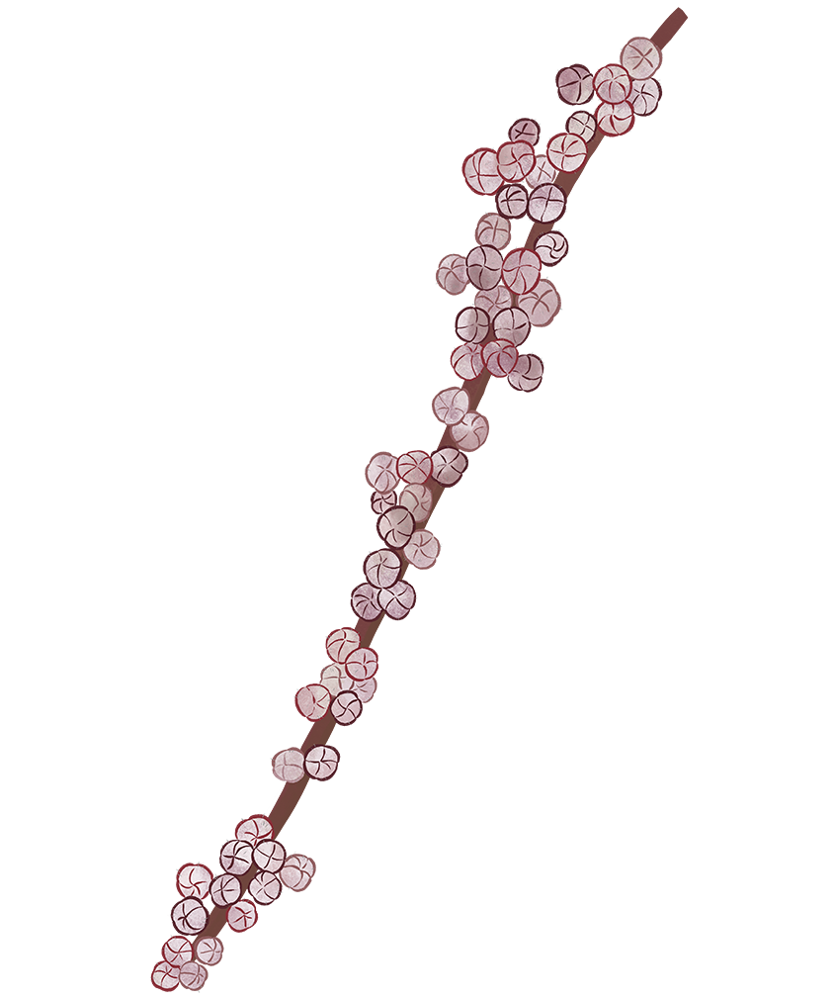

ORTICA
Urtica dioica
URTICACEAE
MORFOLOGIA
Pianta erbacea perenne alta anche 2 m, con fusti eretti, coperta ovunque da peli urticanti, con foglie ovate, lanceolate e acuminate dal margine seghettato e verde scuro. I piccoli fiori sono spighette pendenti e i frutti abbondanti sono secchi e di forma ovale con un solo seme interno.
HABITAT
È diffuso in Europa e in Italia è comunissima: si trova nei boschi, nei campi, nelle radure, presso ruderi, terreni umidi e anche in città.
CUCINA
Le foglie giovani, raccolte fra giugno e ottobre, si usano nella preparazione di risotti, minestre, omelette, pesti e condimenti per paste.
